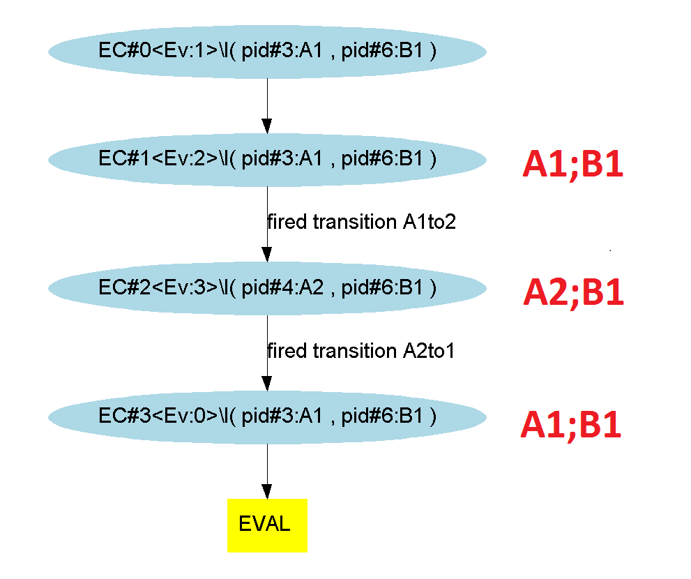
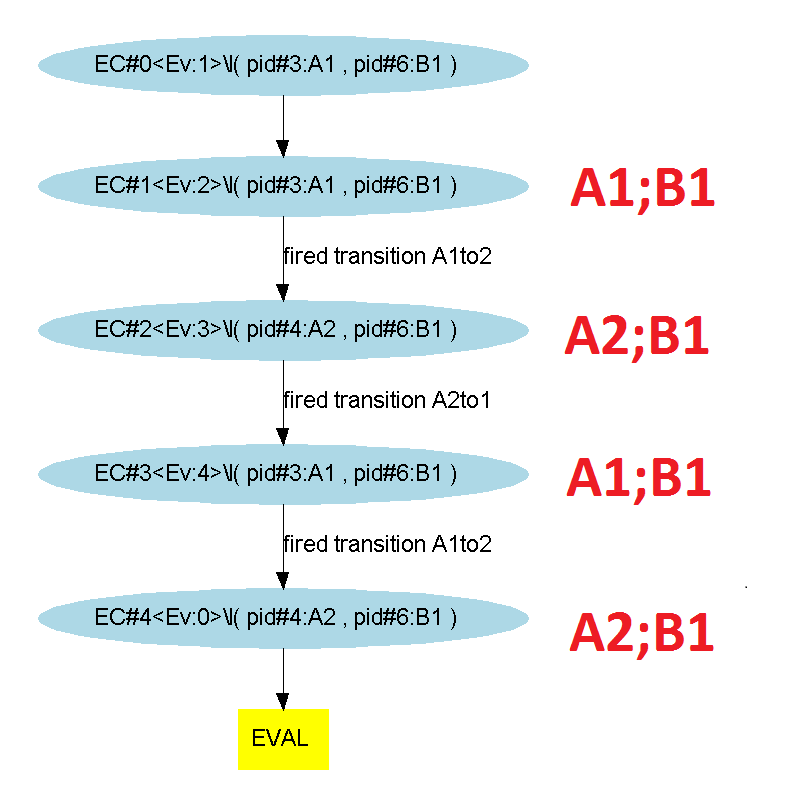
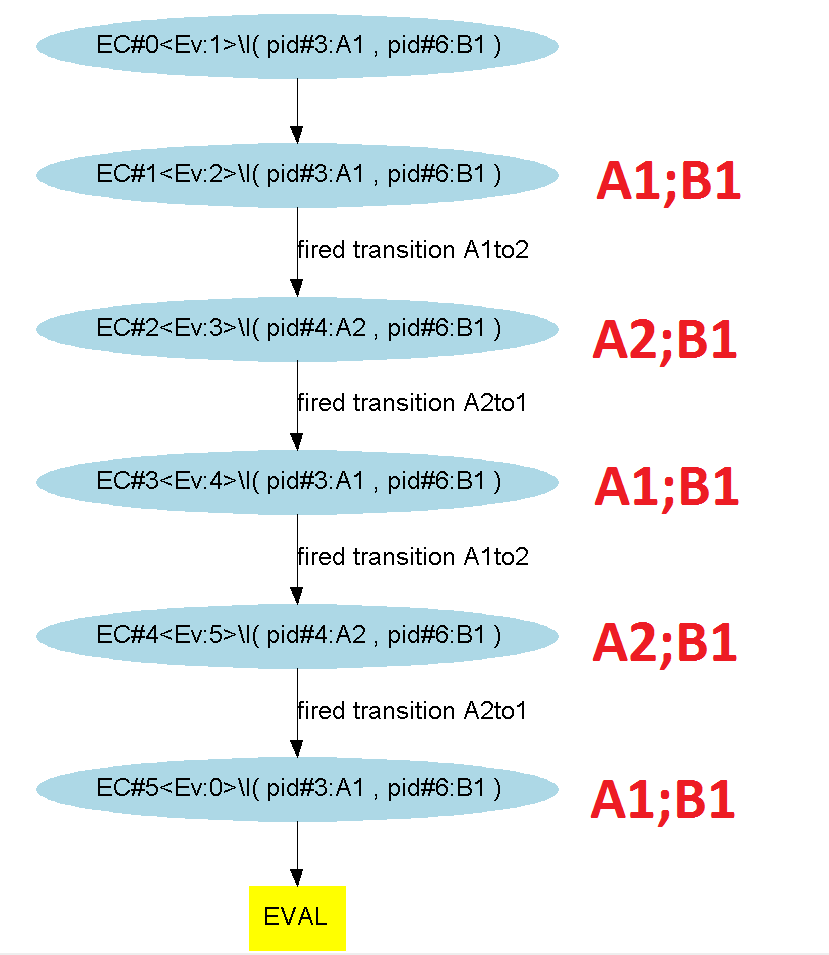

Process P is evaluated in the initial context. Process Q is evaluated in the initial context with in addition, if P terminates, the Boolean negation of conditions resulting from P's evaluation. Thus, if both P and Q terminate, there are two possible resulting contexts.
Considering 2 processes : P and Q, when assuming the priority P |>| Q :
Q is evaluated in the initial context
Applying this on our most basic example, the "@moe:" section looks like :
Here the transitions concerning the automaton "A" will be prioritized over the ones concerning the automaton "B"
WARNING : as you can see, this scheduling operator is not a reflexive binary operator : "P |>| Q" is not the same thing as "Q |>| P".
And exploring the different paths with the symbolic engine (3, 4 and 5 evaluation steps) gives us (here the execution is simultaneous) :
  